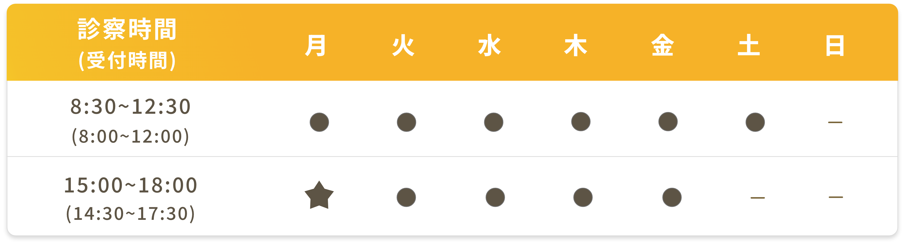
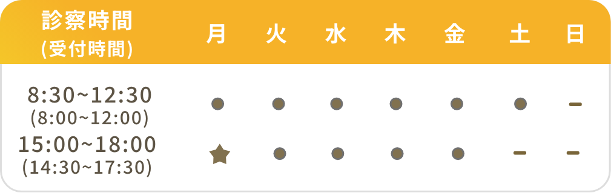

地域の皆様にとって
身近なかかりつけ医として
お知らせ
- 10月1日よりインフルエンザワクチン、コロナワクチンの接種が始まります。 詳しくはこちら
-
医師 中西 宣太
11月19日(木)は休診いたします。
12月10日(木)は休診いたします。
12月11日(金)は休診いたします。 - 当院は中学生以上の方を対象とした保険医療機関です。
-
以下に当てはまる方は、事前にお電話をください。
-
・風邪症状がある
（咳、鼻水、咽頭痛、関節痛、倦怠感等） -
・発熱がある
電話番号/0858-24-6101（のぐち内科クリニック）
-
・風邪症状がある
- 求人情報を公開しました。
- 再診の方もWeb予約ができるようになりました。
- 電子決済が使えます。詳しくはこちら
診療科目
- 内科
- 腎臓内科
- 消化器内科
- 人工透析内科
診療時間

- 月曜のみ19:00（受付は18:30）まで、日曜・祝日休診
-
当院は中学生以上の方を対象とした
保険医療機関です。 -
当院は労災保険指定医療機関では
ありません。 -
発熱、咳、鼻水、咽頭痛、関節痛、倦怠感等ある方は事前にお電話をください。
※携帯電話をお持ちの方は、来院時にご持参いただくようお願いいたします。
診療のご案内
各診療内容の詳細については、アイコンをクリックしてご確認ください。
診療時間

- 月曜のみ19:00(受付は18:30)まで、日曜・祝日休診
-
当院は中学生以上の方を対象とした
保険医療機関です。 -
当院は労災保険指定医療機関では
ありません。 -
発熱、咳、鼻水、咽頭痛、関節痛、倦怠感等ある方は事前にお電話をください。
※携帯電話をお持ちの方は、来院時にご持参いただくようお願いいたします。
アクセス
〒682-0022
鳥取県倉吉市上井町1丁目8-5